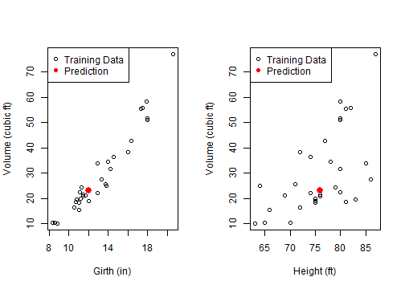

The application uses the trees dataset (31 data points) to predict the volume of timber yielded by a black cherry tree as a function of it girth and height.
The application uses the trees dataset (31 data points) to predict the volume of timber yielded by a black cherry tree as a function of it girth and height.
If we approximated a tree to a cylinder, we would have: \[ Volume = Constant \times Height \times Girth^{2} \] Taking the log: \[ log(Volume) = Constant^{\prime} + log(Height) + 2 . log(Girth) \]
So we fit (non-reactively) a log-linear model of the volume, which gives us coefficients close to what we'd expect:
data(trees)
fit <- lm(log(Volume) ~ log(Height) + log(Girth), data=trees )
fit$coefficients
## (Intercept) log(Height) log(Girth)
## -6.631617 1.117123 1.982650
The application has two numeric inputs, where we enter the height and girth of the tree whose volume we want to predict.
For example, a height and girth of \(76ft\) and \(12in\) gives us a predicted volume of \(22.94 ft^3\).
The prediction is reactively calculated once:
prediction <- reactive(exp(predict(fit, data.frame(Girth=input$girth, Height=input$height))))
and displayed on two plots (Volume ~ Girth and Volume ~ Height), in relation with the data.
